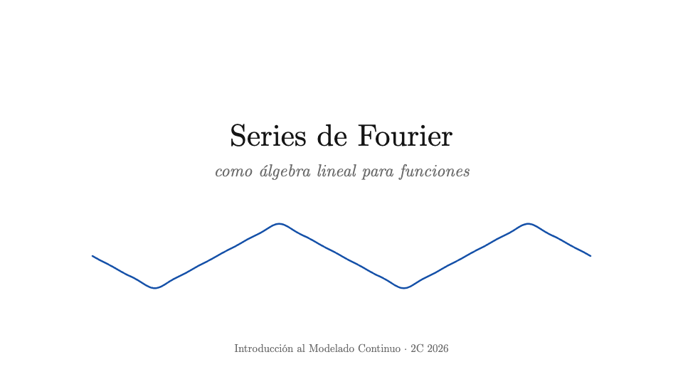
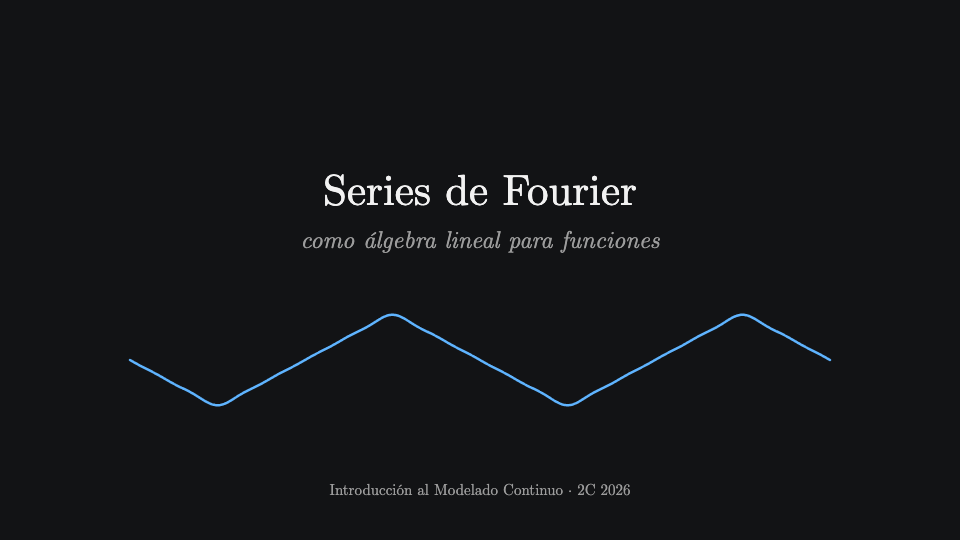
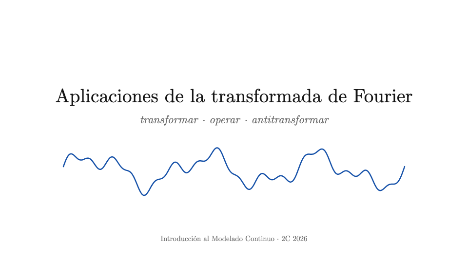
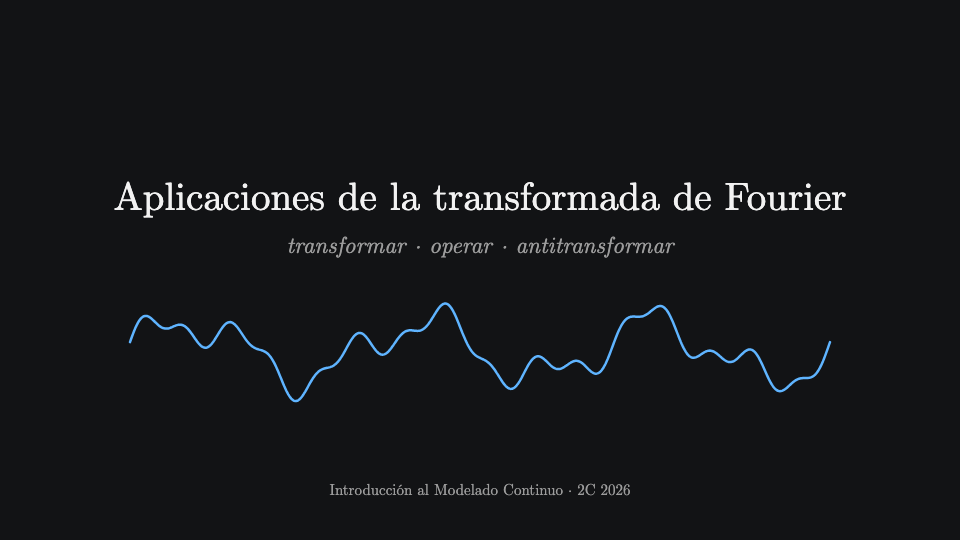

Clases interactivas · Lic. en Ciencia de Datos, FCEN-UBA · 2º cuatrimestre 2026


Bases ortogonales en ℝ² y ℝᴺ, el producto interno como integral, la base de Fourier, coeficientes como proyecciones, y el 1.c por el camino fácil.


Filtrar ruido, espectrogramas, la ballena jorobada, Fourier en 2D, convolución y compresión de imágenes.
En las clases: click, → o espacio avanza; ← retrocede; M (o el número de abajo a la derecha) abre el índice de slides; T cambia entre tema claro y oscuro; F pantalla completa. Cada audio suena con su propio click en el parlante. En el celular (mejor en horizontal): tocar avanza, deslizar hacia la izquierda o la derecha avanza o retrocede. Los puntos con halo se arrastran, y las pastillas, barras y casillas se tocan: así se juega sin pasar de slide.